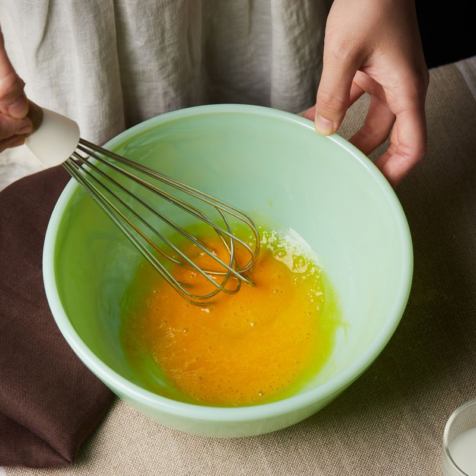
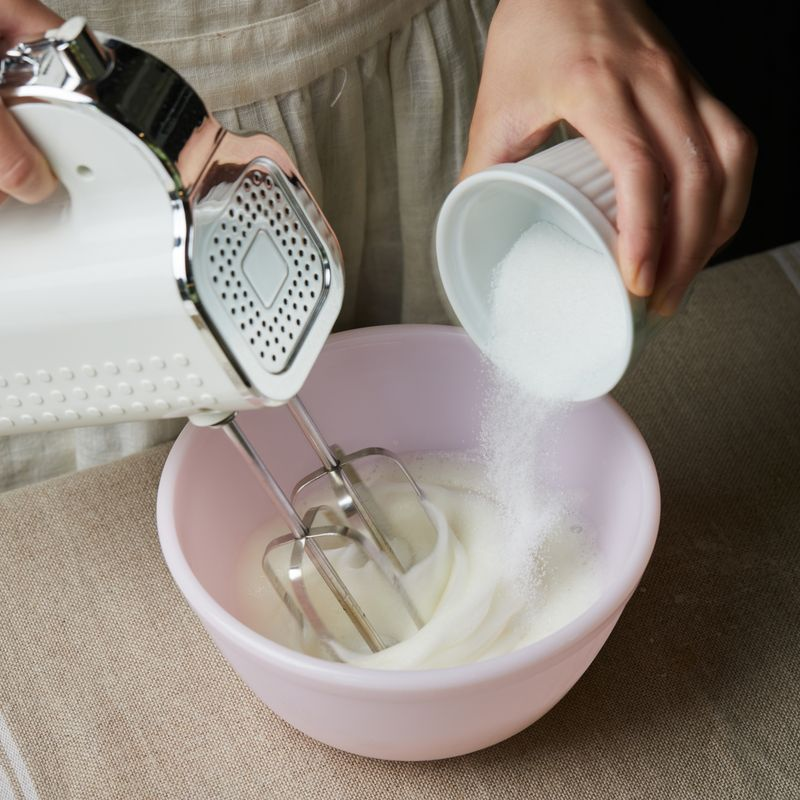
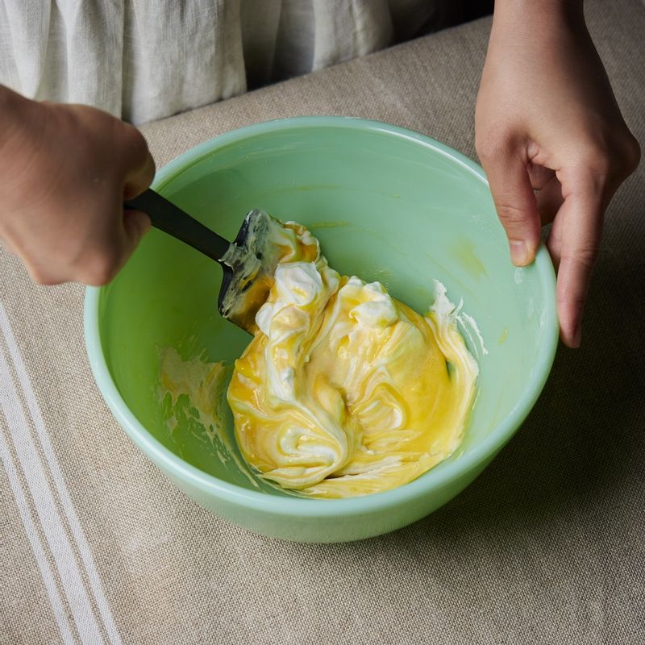
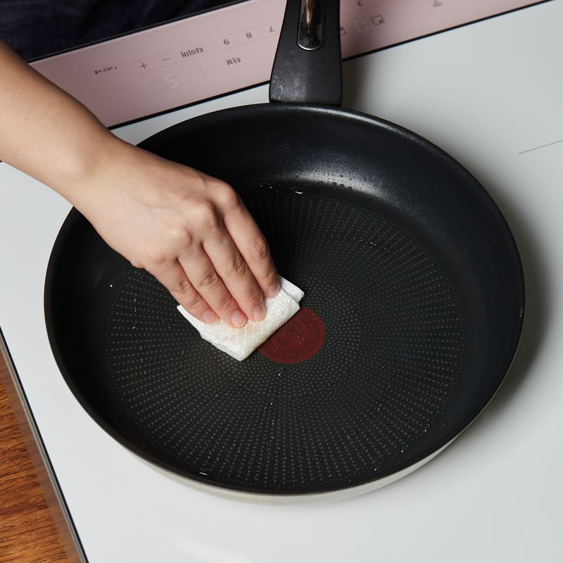
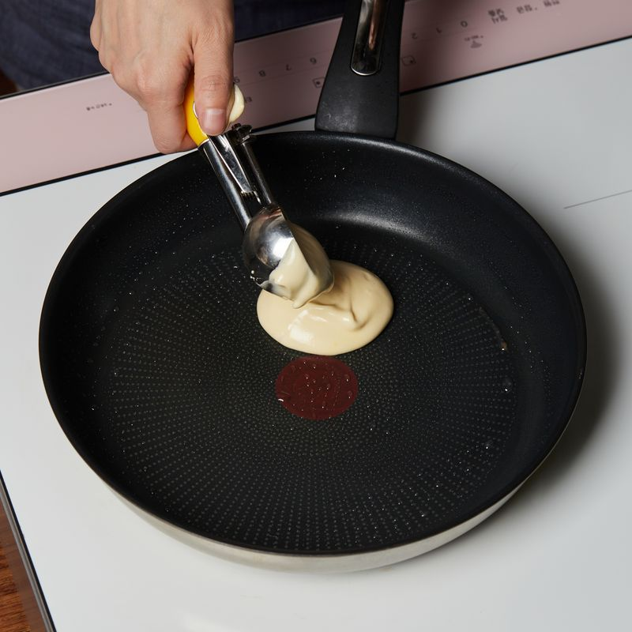
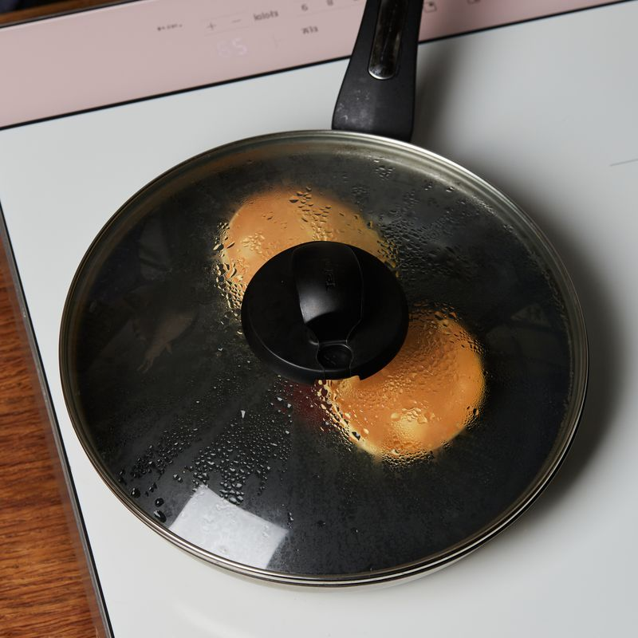
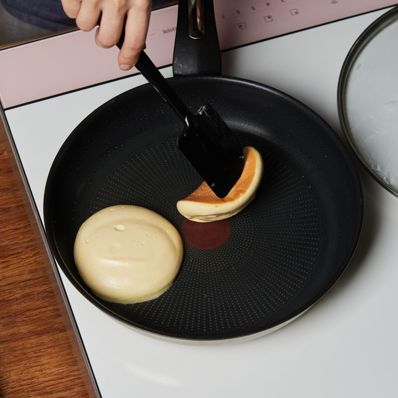
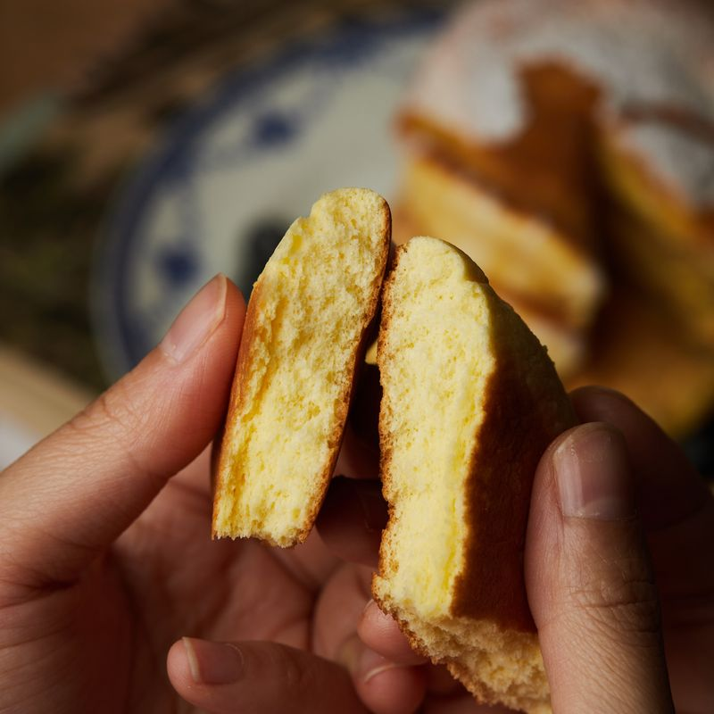

-

볼에 달걀 노른자를 풀어주세요. 설탕을 넣고 섞은 후 우유를 넣어 섞어주세요. 밀가루를 체쳐 넣고 섞어주세요.
-

볼에 차가운 흰자를 넣어 중속으로 20초간 휘핑해주세요. 40초에 설탕을 넣고, 60초에 나머지 설탕을 넣고 휘핑해주세요. 총 4분 정도 머랭을 만들어 주세요.
(tip. 얼음볼에 올려 휘핑하면 더욱 좋은 반죽을 얻을수 있어요)
-

노른자 반죽에 머랭을 2번에 나눠 넣고 가볍게 섞어주세요.
-

팬에 기름을 두르고 키친타월로 닦아낸 후 5단에서 2분간 예열해주세요.
-

반죽 2개 분량을 스쿱으로 떠서 팬에 올린 후 주변에 찬물 1큰술을 뿌리고 뚜껑을 덮어 2단에서 9분간 구워주세요.
(tip. 스쿱이 없다면 작은 국자를 사용해도 좋아요)
-

조심히 뒤집은 후 찬물 1큰술을 주변에 뿌리고 뚜껑을 덮어 2단에서 5분간 더 익혀주세요.
-
반죽을 스쿱으로 떠서 팬에 올린 후 주변에 찬물 1큰술을 뿌리고 뚜껑을 덮어 2단에서 5분간 구워주세요.
-

조심히 뒤집고 찬물 1큰술을 주변에 뿌리고 뚜껑을 덮어 2단에서 5분간 더 익혀주세요.
-

팬케이크를 접시에 담고 블루베리와 메이플시럽을 뿌려 맛있게즐겨주세요.
(tip. 기호에 맞게 좋아하는 과일을 곁들여도 좋아요)